累積分布関数とその逆関数のノンパラメトリック推定
Statistics Toolbox™ には、一変量パラメトリック確率分布用の乱数発生器関数が 20 数個用意されています。これらの関数を使用すると、さまざまなシミュレーション用の乱数入力を生成できます。ただし、簡単なパラメーター ファミリーによって記述されないデータをシミュレートするために乱数値を生成することが必要になる場合があります。
このツールボックスには、抽出元のパラメトリック分布を指定する必要なしに乱数値を生成できる、関数 pearsrnd および johnsrnd も含まれています。これらの関数を使用すると、分布のモーメントと分位数をそれぞれ指定できます。
ただし、収集したデータをさらに厳密に "模倣" する乱数値を生成するために、さらなる柔軟性が必要となる場合があります。この場合は、収集したデータの累積分布関数 (CDF) のノンパラメトリック推定を使用して、逆関数法を使って乱数値を生成できます。逆関数法では、一様な乱数値を単位間隔で生成し、必要な分布の逆 CDF を使用して、その分布に乱数値を変換することが必要となります。
逆の観点から見ると、CDF のノンパラメトリック推定を使用して観測データを単位間隔に変換することで、近似の一様分布を与えることが好ましい場合もあります。
関数 ecdf は、1 種類のノンパラメトリック CDF 推定、つまり階段関数である経験的 CDF を計算します。このデモでは、連続分布からのデータのシミュレートまたは変換に適している、よりスムーズな代替方法について説明します。
目次
説明しやすくするため、ここでは簡単なシミュレーション データを使用します。また、デモ内のプロットを読みやすくするため、観測値は 25 個のみ選択してあります。プロットを簡略化するため、データの並べ替えも行われています。
rand('state'0.2); n = 25; x = evrnd(3,1,n,1); x = sort(x); hist(x,-3.75:.5:5.75); xlabel('x'); ylabel('Frequency');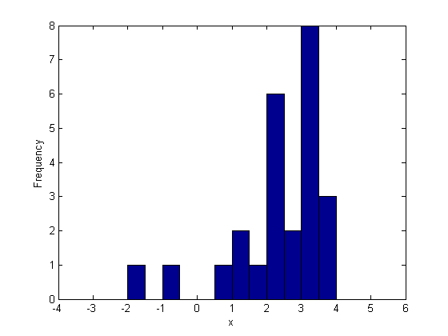
区分的線形ノンパラメトリック CDF 推定
関数 ecdf を使用すると、経験的 "階段" CDF の計算とプロットを簡単に行えます。簡単なケースでは、この推定によって各データ ポイントに 1/n の離散ジャンプが作成されます。
[Fi,xi] = ecdf(x); stairs(xi,Fi,'r'); xlim([-4 6]); xlabel('x'); ylabel('F(x)');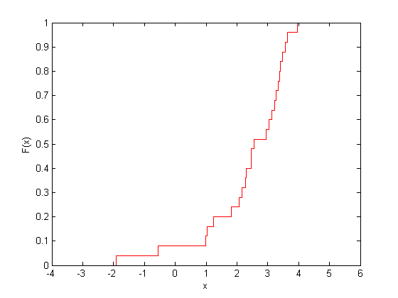
この推定は、パラメトリック モデルのデータに対する適合度を調査する場合など、さまざまな目的で使用できます。ただし、その離散性ゆえに、連続データと単位間隔との間の経験的変換には適していない場合があります。
この問題を解決するために経験的 CDF を変更することは簡単です。各データ ポイントで 1/n の離散ジャンプを取得する代わりに、これらのジャンプの中点にブレークポイントを置き、区分的に線形の関数を定義します。これにより、各データ ポイントにおける高さは、[(1/n), (2/n), ..., 1] ではなく [1/2n, 3/2n, ..., (n-1/2)/n] になります。ecdf の出力を使用して上記のブレークポイントを計算し、"ドットを連結" して区分的線形関数を定義します。
xj = xi(2:end); Fj = (Fi(1:end-1)+Fi(2:end))/2; hold on plot(xj,Fj,'b.', xj,Fj,'b-'); hold off legend({'ECDF' 'Breakpoints' 'Piecewise Linear Estimate'},'location','NW');
ecdf は反復値と打ち切りを近似的に処理するため、この例より複雑なデータを使用する場合でも、この計算は正しく行われます。
最小のデータ ポイントは高さ 1/2n に対応し、最大のデータ ポイントは高さ 1-1/2n に対応するため、関数が 0 および 1 に達するようにするには、最初と最後の線形セグメントをこれらのデータ以上に拡張させなければなりません。
xj = [xj(1)-Fj(1)*(xj(2)-xj(1))/((Fj(2)-Fj(1)));
xj;
xj(n)+(1-Fj(n))*((xj(n)-xj(n-1))/(Fj(n)-Fj(n-1)))];
Fj = [0; Fj; 1];
hold on
plot(xj,Fj,'b-');
hold off
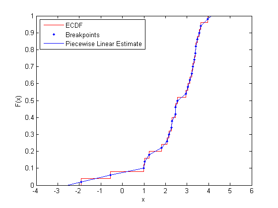 この区分的線形関数からは、連続かつ対称である CDF のノンパラメトリック推定が得られます。オリジナル データ以外のポイントで評価するには、線形補間を行うだけでよく、無名関数を定義しておくと評価を簡単に行えるようになります。
F = @(y) interp1(xj,Fj,y,'linear','extrap'); y = linspace(-2,4,10); plot(xj,Fj,'b-',y,F(y),'ko'); xlim([-4 6]); xlabel('x'); ylabel('F(x)');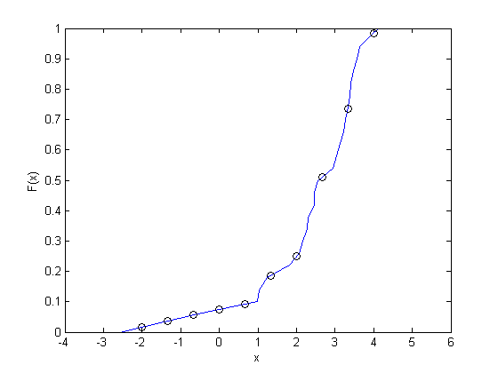
区分的線形ノンパラメトリック逆 CDF 推定
これと同じ計算を使用して、逆 CDF のノンパラメトリック推定を計算できます。実際、逆 CDF 推定は、軸を交換しただけの CDF 推定にすぎません。
stairs(Fi,[xi(2:end); xi(end)],'r'); hold on plot(Fj,xj,'b-'); hold off ylim([-4 6]); ylabel('x'); xlabel('F(x)'); legend({'ECDF' 'Piecewise Linear Estimate'},'location','NW');

このノンパラメトリック逆 CDF をオリジナル ブレークポイント以外のポイントで評価する場合も、先ほどと同様に線形補間を行うだけですみます。たとえば、一様乱数値を生成し、CDF 推定を使用して、これらの乱数値をオリジナルの観測データの尺度に変換し直します。これを逆関数法と呼びます。
Finv = @(u) interp1(Fj,xj,u,'linear','extrap'); u = rand(10000.1); hist(Finv(u),-3.875:.25:5.875); xlabel('x'); ylabel('Frequency');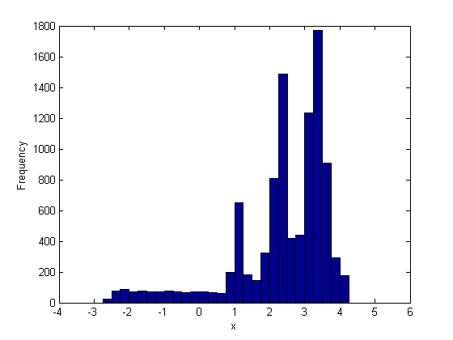
シミュレートされたデータのヒストグラムが、オリジナル データのヒストグラムより分散していることに注目してください。この原因の 1 つとして、オリジナル データがわずか 25 個の値から成るのに対し、シミュレートされたデータのサンプル サイズが格段に大きいことが挙げられます。また、区分的線形 CDF 推定によって、オリジナルの各観測値が一定の間隔にわたって実質的に "分散" されることも、もう 1 つの原因です。このことは、個々の観測値が厳密に分離されている領域に特に当てはまります。
たとえば、零点の左にある 2 つの個々の観測値は、シミュレートされたデータ内の広く平坦な低密度領域に対応します。その逆に、右裾に向かった領域など、データ間隔が狭い領域では、区分的線形 CDF 推定による観測値の "分散" の度合いが低くなります。その意味で、この推定法では、簡単な形式の可変帯域幅平滑化が実行されます。ただし、平滑化されても、シミュレートされたデータはオリジナル データの特性 (つまり、高密度領域と低密度領域) をほとんど維持します。
CDF および逆 CDF 向けのカーネル推定器
区分的線形関数を使用して CDF を推定する代わりに、関数 ksdensity を使用してカーネル推定を実行することで、滑らかなノンパラメトリック推定を行うことができます。ksdensity は、ノンパラメトリックな密度推定を行うために使用されるのが一般的ですが、他の関数を推定することもできます。たとえば、オリジナル データを単位間隔に変換するには、この関数を使用して CDF を推定します。
F = ksdensity(x, x, 'function','cdf', 'width',.35); stairs(xi,Fi,'r'); hold on plot(x,F,'b.'); hold off xlim([-4 6]); xlabel('x'); ylabel('F(x)'); legend({'ECDF' 'Kernel Estimates'},'location','NW');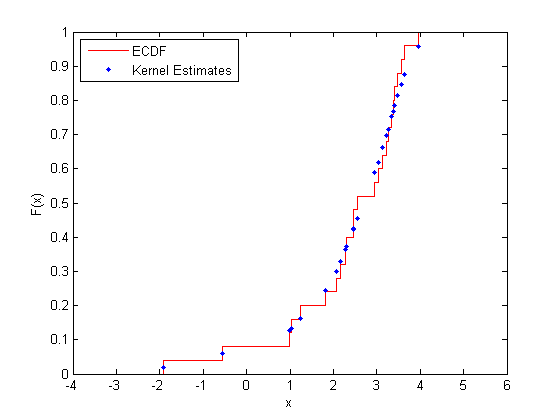
ksdensity を使用すると、オリジナル データ以外のポイントでカーネル CDF 推定を簡単に評価することもできます。たとえば、滑らかな曲線として推定をプロットします。
y = linspace(-4.60.1000); Fy = ksdensity(x, y, 'function','cdf', 'width',.35); stairs(xi,Fi,'r'); hold on plot(y,Fy,'b-'); hold off legend({'ECDF' 'Kernel Estimate'},'location','NW');

ksdensity は、帯域幅パラメーターを使用して、計算対象の推定における平滑化の量を制御します。ksdensity によって既定値が自動的に選択されるようにすることもできます。ここに示す例では、非常に小さな帯域幅を使用して、平滑化の量を制限しています。それにもかかわらず、カーネル推定は、区分的線形推定ほど厳密には ECDF に従いません。
カーネル推定を使用して逆 CDF を推定する方法の 1 つは、オリジナル データの範囲にあるグリッド ポイントに対するカーネル CDF 推定を計算してから、区分的線形推定の場合と同じ手順に従うことです。たとえば、逆 CDF カーネル推定を滑らかな曲線としてプロットするには、単に軸を交換します。
stairs(Fi,[xi(2:end); xi(end)],'r'); hold on plot(Fy,y,'b-'); hold off ylim([-4 6]); ylabel('x'); xlabel('F(x)'); legend({'ECDF' 'Kernel Estimate'},'location','NW');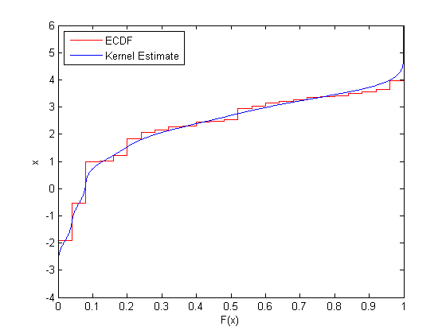
一様な乱数値をオリジナル データの尺度に変換し直すには、CDF 推定のグリッドを使用して補間します。
Finv = @(u) interp1(Fy,y,u,'linear','extrap'); hist(Finv(u),-3.875:.25:5.875); xlabel('x'); ylabel('Frequency');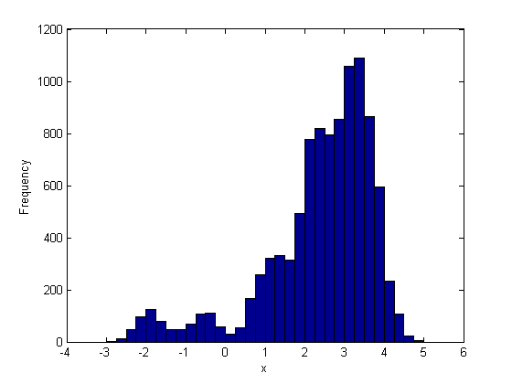
カーネル CDF 推定を使用してシミュレートされたデータは、オリジナル データに含まれている零点の左側にある 2 つの個々の観測値では完全には "平滑化" されていません。カーネル推定では固定帯域幅が使用されます。上記の 2 つの観測値は、区分的線形推定の場合は広く平坦な領域に寄与しましたが、この例の帯域幅値を使用すると、局所化された 2 つの高密度領域に寄与します。それとは対照的に、カーネル推定では、右裾部分のデータが区分的線形推定の場合より平準化されます。
カーネル推定を使用してシミュレートされたデータを生成するもう 1 つの方法は、ksdensity を使用して逆 CDF の推定を直接計算することです。ここでもまた、'function' パラメーターを使用します。たとえば、上記と同じ一様な値を変換します。
r = ksdensity(x, u, 'function','icdf', 'width',.35);
ただし、後者の方法は、データが大量にある場合に時間がかかります。これより簡単でありながら同等の方法は、オリジナル データからの置き換えを使ってリサンプリングして、乱数による適切な誤差を追加する方法です。
r = randsample(x,100000,true) + normrnd(0,.3,100000,1);
十分な乱数値を生成すると、結果のヒストグラムは、オリジナル データのカーネル密度推定に厳密に従うようになります。
binwidth = .25; edges = -4:binwidth:6; ctrs = edges(1:end-1) + binwidth./2; counts = histc(r,edges); counts = counts(1:end-1); bar(ctrs,counts./(sum(counts).*binwidth),1,'FaceColor',[.9 .9 .9]); hold on xgrid = edges(1):.1:edges(end); fgrid = ksdensity(x, xgrid, 'function','pdf', 'width',.35); plot(xgrid,fgrid,'k-'); hold off xlabel('x'); ylabel('f(x)');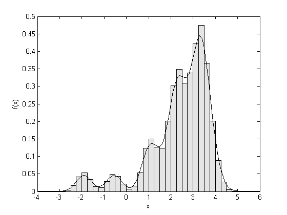
セミパラメトリック CDF 推定
ノンパラメトリック CDF 推定では、妥当な精度を実現するために相当な量のデータが必要となります。また、データは "局所的" にしか推定に影響を与えません。つまり、データ密度の高い領域では、データ密度の低い領域より多くの観測値に基づいて推定が行われます。そのため、ノンパラメトリック推定は、データが希薄となる、分布の裾部分では正しく実行されません。
関数 paretotails を使用してセミパラメトリック モデルをデータに近似させると、ノンパラメトリックとパラメトリックの両方のメリットを得ることができます。セミパラメトリック モデルは、分布の "中心" では、CDF に対して区分的線形ノンパラメトリック推定を使用し、各裾部分では、一般化パレート分布を使用します。一般化パレート分布は、多くの場合、データセットの裾に対するモデルとして使用されます。この分布は、さまざまな分布の裾に近似するのに十分な柔軟性を備えていると同時に、データをほとんど必要とせずに裾データに滑らかに近似するのに十分な制約も受けています。
たとえば、データの "中心" を中央の 60% として定義して、ノンパラメトリック推定とパレート近似との間の遷移がデータの分位数 0.20 と 0.80 で起こるものと指定します。セミパラメトリック モデル近似の CDF を評価するには、近似の cdf メソッドを使用します。
semipFit = paretotails(x,.20,.80);
警告:Problem fitting generalized Pareto distribution to lower tail. Maximum likelihood has converged to a boundary point of the parameter space.
この警告は、使用するデータが少なすぎる (この場合は裾ごとに 5 ポイント) ために表示されるもので、低い方の裾部分にある近似一般化パレート分布が最小の観測値までしか拡張されないことを示しています。実際の状況では、データ量がこれより多い場合が大半であるため、通常この警告は発生しません。
[p,q] = boundary(semipFit); y = linspace(-4.60.1000); Fy = cdf(semipFit,y); plot(y,Fy,'b-', q,p,'k+'); xlim([-4 6]); xlabel('x'); ylabel('F(x)'); legend({'Semi-parametric Estimate' 'Segment Boundaries'},'location','NW');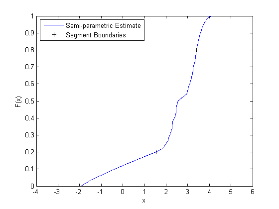
一様乱数値をオリジナル データの尺度に変換し直すには、近似の icdf メソッドを使用します。
r = icdf(semipFit,u); hist(r,-3.875:.25:5.875); xlabel('x'); ylabel('Frequency');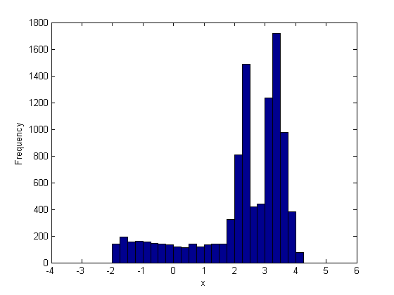
このセミパラメトリック推定は、データの裾部分で使用されるパラメトリック モデルが原因で、中心部より裾部分で平滑化されています。その意味で、この場合の推定は、カーネル推定より区分的線形推定に対する類似性が高くなります。ただし、paretotails を使用することによって、データの中心部でカーネル推定を使用するセミパラメトリック近似を作成することも可能です。
まとめ
このデモでは、ノンパラメトリック CDF、セミパラメトリック CDF、または逆 CDF の各推定をデータから計算するための 3 通りの方法について説明しました。これらの 3 つの方法では、データに対する平滑化の量と種類がそれぞれ異なります。どの方法を選択すべきかは、データの重要な特長と考えられるものをどの方法で取り込むことができるかどうかによって決まります。